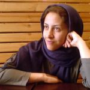

|
|
|
Browsing
Contact Us |
Campaigners |
Face to Face |
Tribune |
Interview |
News |
On the Web |
One Million |
Report
Farsi | Français | German | Italian | Spanish | العربية Also in this section
|
 Maryam Bahreman Still Held Despite Order for ReleaseSaturday 16 July 2011 Women’s rights activist Maryam Bahreman remains in detention despite an order from the Prosecutor’s office in Shiraz to release her on bail at the start of July. Amnesty International considers her to be a prisoner of conscience, held solely for the peaceful exercise of her rights to freedom of expression and association. Between her arrest on 11 May and 5 July 2011, Maryam Bahreman was held in solitary confinement in Detention Centre No. 100 in Shiraz, which is controlled by the Intelligence Ministry. Her family was able to visit her there several times. Late at night on 5 July she was transferred to a women’s section in a Shiraz prison. Since the transfer, she has been able to phone her family. On 4 and 5 July 2011 Maryam Bahreman was questioned by officials in the Prosecutor’s Office in the presence of her lawyers. Her interrogation concerned an alleged “offence” of “acting against state security”, as well as new “offences” including “propaganda against the system”, “dissemination of false information”, “participating in protests” and “insulting the Supreme Leader”. Following this session, an order was made to release her on bail, but for unknown reasons, this has not yet been implemented. Amnesty International fears that the Iranian authorities may be considering bringing fresh charges against Maryam Bahreman in order to offset the international criticism over her arrest. She was arrested after speaking about “Information and Communications Technologies in Iran from a gender perspective” at the 55th session of the UN Commission on the Status of Women, which took place in New York between 22 February and 4 March 2011. Maryam Bahreman is a member of the One Million Signatures Campaign, also known as the Campaign for Equality, in the city of Shiraz, and was also General Secretary of Pars Women’s Organization (Sazman-e Zanan Pars), which was closed in 2007. Shortly before her arrest, she had also written a blog condemning the continuing house arrest of opposition leader Mir Hossein Mousavi and his wife, political activist Zahra Rahnevard. PLEASE WRITE IMMEDIATELY in Persian, Arabic, English or your own language: Calling on the Iranian authorities to immediately and unconditionally release Maryam Bahreman, as well as all other imprisoned members of the One Million Signature Campaign held solely for the peaceful exercise of their rights to freedom of expression, assembly and association; Reminding the authorities that, as a state party to the International Covenant on Civil and Political Rights, Iran is obliged to uphold the rights to freedom of expression and association. Additional Information The One Million Signatures Campaign, also known as the Campaign for Equality, launched in 2006, is a grassroots initiative composed of a network of people committed to ending discrimination against women in Iranian law. The Campaign gives basic legal training to volunteers, who travel around the country promoting the Campaign. They talk with women in their homes, as well as in public places, telling them about their rights and the need for legal reform. The volunteers are also aiming to collect one million signatures of Iranian nationals for a petition demanding an end to legal discrimination against women in Iran. Dozens of the Campaign’s activists have been arrested or harassed for their activities for the Campaign, some while collecting signatures for the petition. At least six members of the Campaign are currently in prison for their activities promoting human rights and gender equality. Mahboubeh Karami began serving a three-year sentence in Tehran’s Evin Prison on 15 May 2011, imposed for her peaceful activities in support of greater rights for women. Alieh Aghdam-Doust is serving a three-year prison sentence in Evin Prison for participating in a peaceful demonstration in June 2006 against laws which discriminate against women in Iran. Fatemeh Masjedi began serving a six-month sentence on 28 January 2011 in the city of Qom, south-west of Tehran, in Langaroud Prison. She had been convicted of “spreading propaganda against the system in favour of a feminist group [the Campaign] by distributing and collecting signatures for a petition to change laws discriminating against women, and for publication of materials in support of a feminist group opposed to the system”. Another woman, Maryam Bidgoli, is facing imprisonment in the same case. Zeynab Beyezidi, a member of the Kurdish minority who is also a member of the Kurdistan Human Rights Organization (KHRO), is serving a four-and-a-half-year sentence in Zanjan Prison, in the north-west of the country, in connection with her membership of the KHRO and her activities for the Campaign. Ronak Safazadeh, a Campaign member who is also a member of the Kurdish minority, is serving a six-year sentence, convicted of membership of a Kurdish armed group, PJAK. With regard to the charge of membership of PJAK, her lawyer stated that “the activities of my client were limited to activities within the Azar Mehr Women’s NGO, and so her activities in PJAK were carried out toward this end as well. My client aimed to research ’the reasons for women’s participation in PJAK under difficult conditions’.” Campaign member Behareh Hedayat, a student and women’s rights activist who was serving a nine-year sentence for these activities, was sentenced in April 2011 to an additional six months in prison in connection with a statement she had written in prison. Campaign member Hengameh Shahidi, a journalist and political activist, is serving a six-year sentence in Evin Prison. At her trial, the charges against her included the collection of signatures for the Campaign. She was granted temporary medical leave on 20 June 2011. Three other women have been arrested in recent weeks for unknown reasons. Photojournalist Maryam Majd and documentary film maker Mahnaz Mohammadi were arrested in June 2011 and are both held in Section 2A of Evin Prison, in Tehran. The whereabouts of Pegah Ahangarani an actress and documentary film maker, arrested on or about 10 July, are unknown. Members of the One Million Signature Campaign have always stressed that their activities fully conform to Iranian law. Articles 2 and 3 of the International Covenant on Civil and Political Rights, to which Iran is a state party, prohibit discrimination on the grounds of sex. Article 9 prohibits arbitrary arrest and detention and Article 14 provides for the right to a fair trial, including the right of access to a lawyer. Articles 19, 21 and 22 provide for freedom of expression, assembly and association. |